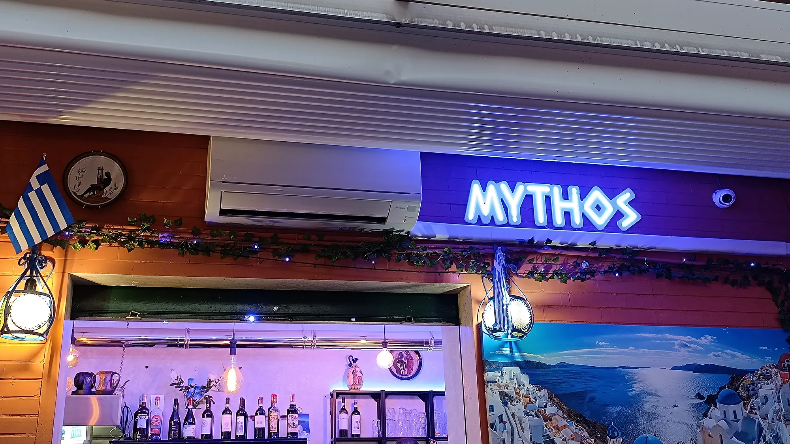
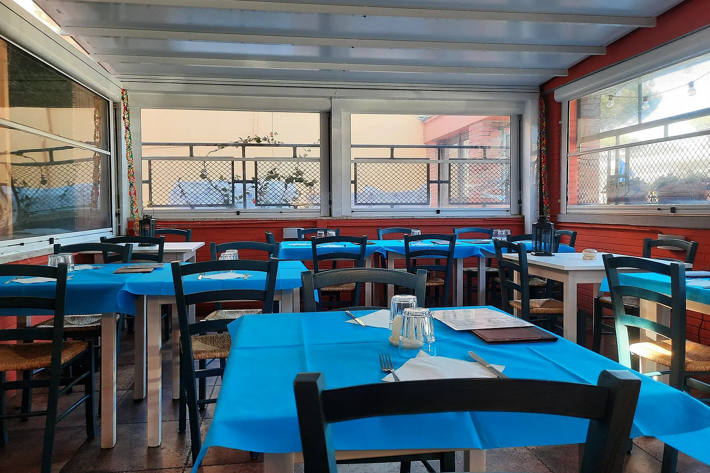
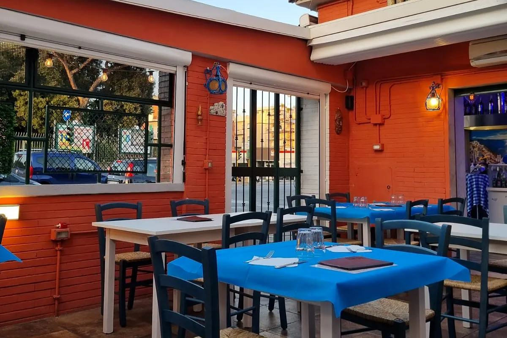

Gyros, souvlaki e moussaka su Via Tuscolana.
Cucina greca a due passi dalla metro A, Arco di Travertino. Pranzo e cena, chiuso il lunedì.
Prenota un tavolo oppure chiamaci 06 8777 4778
Il ristorante
Piatti greci, senza giri di parole.
Facciamo cucina greca: gyros, pita gyros, souvlaki, moussaka, tzatziki, dolmades, saganaki e insalata greca. A pranzo e a cena, tutti i giorni tranne il lunedì.
Siamo su Via Tuscolana 596, a due passi dalla fermata Arco di Travertino della metro A. Prenoti qui sotto in meno di un minuto, oppure ci chiami e rispondiamo noi.
- Indirizzo
- Via Tuscolana 596, Roma
- Metro
- Metro A, Arco di Travertino
- Telefono
- 06 8777 4778
- Chiuso
- Lunedì
- Servizio
- Pranzo e cena
- Consegna
- Just Eat
Orari in aggiornamento — chiamaci per conferma. Il riquadro delle prenotazioni qui sotto mostra sempre gli orari in cui possiamo davvero sederti.
I piatti
Quello che esce dalla cucina.
-

Gyros
-

Dalla griglia
-

Pita gyros
-

Insalata greca
-

Souvlaki
-

Tzatziki
-

Dolmades
-

Baklava
Prenota
Quando vieni?
Scegli il giorno e l'orario. Ti diamo subito un codice: tienilo da parte, serve per annullare.
Preferisci il telefono? Chiamaci allo 06 8777 4778
Dove siamo
Via Tuscolana 596, Roma.
Metro A, fermata Arco di Travertino: da lì sono due passi. Lunedì chiuso; il resto della settimana pranzo e cena.

